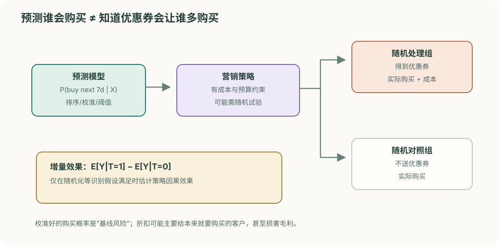
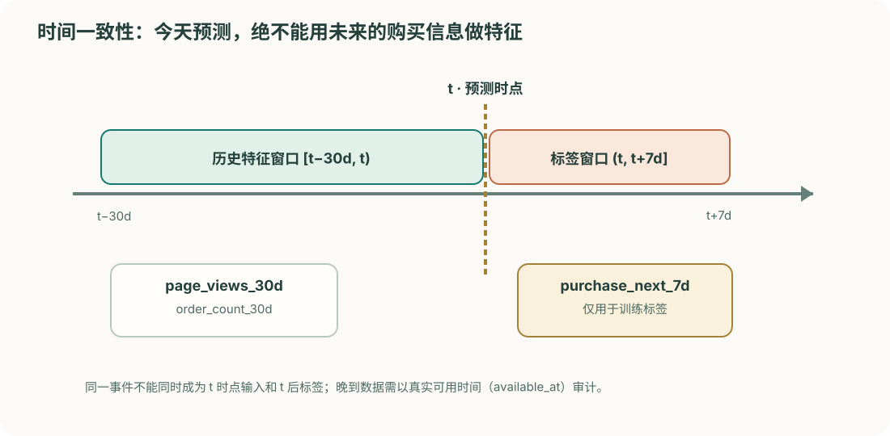
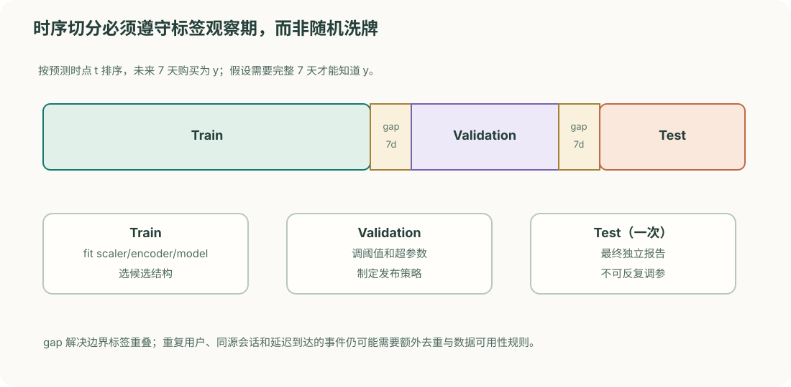
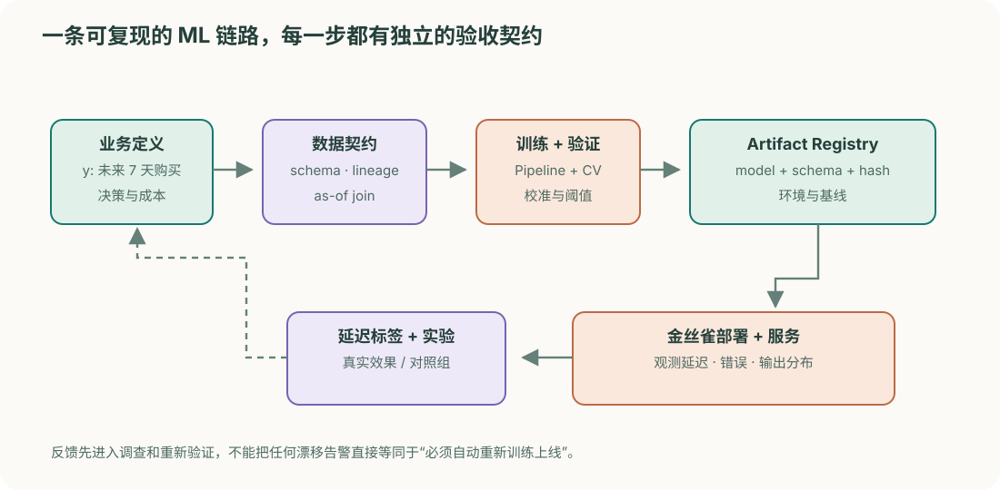
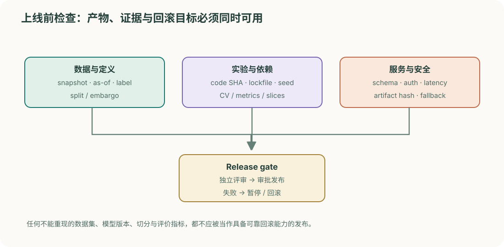

毕业项目：从时间一致特征到可回滚的端到端 ML 系统
构造一个完整的未来 7 天购买预测项目，严格界定预测时点、历史特征、未来标签、时间留白、验证阈值、服务契约、营销增量评估和发布审核。
01 · 毕业项目的目标不是预测分数，而是有约束的业务决策
某电商平台希望利用近期用户行为预测未来 7 天是否下单。最直接的任务是二分类：给定用户在时点 t 可用的历史特征 X(t)，估计未来 7 天至少一次购买的概率。请注意：预测自然购买概率不能直接回答“给谁优惠券最能产生增量购买”，后者是因果决策与随机试验问题。
在制定业务指标之前，确定动作、误报和漏报成本、用户隐私边界、合规限制以及标签获取机制。用户的购买意向高并不表示向其发券可以带来更多利润；“预测指标更高”也不等于“营销策略更有效”。

02 · 时间切片：特征必须来自预测发生之前
这是项目最重要的技术契约：每个训练样本对应一个预测时点 t。历史特征只读取 [t−30d, t) 内当时已经可用的浏览、加购、订单等事件；标签才读取 (t, t+7d] 的购买记录。按用户做 aggregation 时还要区分事件发生时间 event_time 与系统实际可用时间 available_at：晚到事件不能回填到当时线上尚未拥有的特征。

如果特征中含有“最近订单是否成功”，需要确认这是 t 之前发生且已写入系统的结果；若包含 t 之后的支付通知或促销干预，模型可能获得虚假的高准确率。Feast 文档中 point-in-time join 的设计目标正是按实体与时间检索历史特征，而不是把最新一行无条件加入旧样本。
03 · 可执行实验：as-of 特征和未来标签从不同窗口生成
下例只用两个用户和几条人工事件，演示按时间窗计算浏览计数与未来购买标签。它不是电商真实数据库，而是用于核对窗口边界与逻辑的单元实验。
import pandas as pd
events = pd.DataFrame([
("u1", "2026-01-02", "view"), ("u1", "2026-01-05", "view"),
("u1", "2026-01-12", "buy"), ("u1", "2026-01-17", "buy"),
("u2", "2026-01-04", "view"), ("u2", "2026-01-09", "view"),
], columns=["user", "event_time", "event_type"])
events["event_time"] = pd.to_datetime(events["event_time"])
snapshots = pd.DataFrame([
("u1", "2026-01-10"), ("u2", "2026-01-10"),
], columns=["user", "as_of"])
snapshots["as_of"] = pd.to_datetime(snapshots["as_of"])
def build_example(user, t):
history = events[(events["user"] == user) &
(events["event_time"] < t) &
(events["event_time"] >= t - pd.Timedelta(days=30))]
future = events[(events["user"] == user) &
(events["event_time"] > t) &
(events["event_time"] <= t + pd.Timedelta(days=7))]
return int((history["event_type"] == "view").sum()), int(
(future["event_type"] == "buy").any())
features = [build_example(row.user, row.as_of) for row in snapshots.itertuples()]
assert features == [(2, 1), (2, 0)]
print("views_past_30d, buy_next_7d:", features)模型上线时只可运行历史特征函数，不能在请求处理中调用“未来标签”路径。真实系统还要处理 UTC/当地时区、事件重复、用户身份合并、退款订单、异常行为以及实际可用时间。
04 · 训练、验证、测试必须按未来标签窗口隔离
随机拆分用户—日期快照，会让同一用户或临近时间的交易信息同时落入训练和测试；若标签跨越切分边界，验证集开始时甚至还无法知道上一阶段样本的完整标签。对于未来 7 天购买任务，可以在阶段间留出至少标签成熟期的 embargo，按样本的 as-of 时间切分。

import pandas as pd
as_of = pd.date_range("2026-01-01", periods=180, freq="D")
train = as_of[as_of < pd.Timestamp("2026-04-01")]
valid = as_of[(as_of >= pd.Timestamp("2026-04-08")) &
(as_of < pd.Timestamp("2026-05-01"))]
test = as_of[as_of >= pd.Timestamp("2026-05-08")]
assert len(train) > 0 and len(valid) > 0 and len(test) > 0
assert train.max() + pd.Timedelta(days=7) < valid.min()
assert valid.max() + pd.Timedelta(days=7) < test.min()
print("train/validation/test snapshots:", len(train), len(valid), len(test))此处只校验标签窗口隔离，并没有解决重复用户、同设备、同会话的依赖。实际 split 必须依据要模拟的部署场景设计：如果要预测从未见过的用户，应再考虑用户层面分组；如果预测老用户的未来行为，则时间前滚验证更贴近真实使用方式。
05 · 离线建模：Pipeline、验证集选阈值与最终测试
端到端实验至少包含一个常量概率基线和一个可审查的经典模型。下面对合成数据按时间切分，在训练集拟合 StandardScaler 与 LogisticRegression，仅用验证集按设定错误成本选择阈值，测试集只报告一次。目标概率来自人工随机机制，不代表任何真实电商转化率。
import numpy as np
import pandas as pd
from sklearn.pipeline import make_pipeline
from sklearn.preprocessing import StandardScaler
from sklearn.linear_model import LogisticRegression
from sklearn.metrics import average_precision_score, confusion_matrix
rng = np.random.default_rng(28)
n = 1800
dates = pd.date_range("2026-01-01", periods=180, freq="D").repeat(10)
views = rng.poisson(3, n).astype(float)
carts = rng.binomial(3, 0.25, n).astype(float)
recency = rng.uniform(0, 30, n)
true_p = 1 / (1 + np.exp(-(-3.0 + 0.16*views + 0.7*carts - 0.025*recency)))
label = rng.binomial(1, true_p)
X = np.column_stack([views, carts, recency])
tr = dates < pd.Timestamp("2026-04-01")
va = (dates >= pd.Timestamp("2026-04-08")) & (dates < pd.Timestamp("2026-05-01"))
te = dates >= pd.Timestamp("2026-05-08")
model = make_pipeline(StandardScaler(), LogisticRegression(random_state=28))
model.fit(X[tr], label[tr])
validation_prob = model.predict_proba(X[va])[:, 1]
cost_false_positive, cost_false_negative = 1, 5
thresholds = np.linspace(0.10, 0.90, 17)
def cost(t):
pred = validation_prob >= t
return (cost_false_positive * ((pred == 1) & (label[va] == 0)).sum()
+ cost_false_negative * ((pred == 0) & (label[va] == 1)).sum())
chosen = min(thresholds, key=cost) # 只使用验证数据
test_prob = model.predict_proba(X[te])[:, 1]
test_pred = test_prob >= chosen
matrix = confusion_matrix(label[te], test_pred, labels=[0, 1])
assert matrix.shape == (2, 2)
print("validation-chosen threshold:", round(chosen, 2))
print("held-out synthetic AP:", round(average_precision_score(label[te], test_prob), 3))
print("test confusion matrix:", matrix.tolist())错误成本参数代表一个明确的假设，不是优惠券利润函数；真实策略的净收益还要考虑券成本、客户响应的因果增量、额度与用户体验。AP 衡量排序质量，不能当作校准评价；阈值可以随成本和验证分布变化，不能在测试集上反复挑选最优值。
06 · 模型工件与输入 schema 作为一个整体发布
分类器本身不等于可复现的发布物。预处理参数、标签顺序、用户时间窗口、模型阈值、依赖版本和数据快照构成整体契约。可以将完整 Pipeline 保存到受控位置，并生成带 SHA-256 的 manifest；但哈希只验证字节完整性，无法证明工件来源可信，更不能安全地加载不受信任的 pickle/joblib 文件。
import json
import hashlib
import tempfile
from pathlib import Path
import joblib
import numpy as np
import sklearn
from sklearn.pipeline import make_pipeline
from sklearn.preprocessing import StandardScaler
from sklearn.linear_model import LogisticRegression
rng = np.random.default_rng(28)
X = rng.normal(size=(80, 3))
y = (X[:, 0] + 0.5 * X[:, 1] > 0).astype(int)
pipeline = make_pipeline(StandardScaler(),
LogisticRegression(random_state=28)).fit(X, y)
with tempfile.TemporaryDirectory() as tmp:
artifact = Path(tmp) / "trusted-demo.joblib"
joblib.dump(pipeline, artifact) # 仅载入本实验刚生成的可信文件
manifest = {"schema": ["views_30d", "carts_30d", "recency_days"],
"positive_label": 1, "sklearn_version": sklearn.__version__,
"sha256": hashlib.sha256(artifact.read_bytes()).hexdigest()}
reloaded = joblib.load(artifact)
np.testing.assert_allclose(reloaded.predict_proba(X[:5]),
pipeline.predict_proba(X[:5]))
assert len(manifest["sha256"]) == 64
print(json.dumps(manifest, ensure_ascii=False))生产环境还需记录数据特征的单位与范围、不可见类别策略、决定阈值的成本假设和模型签名，且训练特征必须与线上同样的 as-of 语义生成。上述保存/加载代码只适合受信任的本地实验，不允许直接复用来加载用户上传工件。
07 · 购买倾向与优惠券效果：预测模型不能替代随机试验
一个用户购买概率高，可能意味着他无券也会购买；优先给这种用户发券反而可能浪费预算。若业务目标是优惠券带来的增量转化，要比较同类用户在“发券”和“不发券”两种处理下的结果。在随机分配且无干扰、遵守实验协议等条件下，样本组间购买率之差可以估计平均处理效应（ATE）。
import numpy as np
rng = np.random.default_rng(2026)
n = 20000
treatment = rng.integers(0, 2, size=n) # 人工随机分配
baseline = 0.12
true_increment = 0.02 # 仅模拟用，不是实际营销效果
purchase = rng.binomial(1, baseline + treatment * true_increment)
observed_ate = purchase[treatment == 1].mean() - purchase[treatment == 0].mean()
assert 0 < treatment.sum() < n
print("illustrative randomized ATE:", round(observed_ate, 4))这个固定随机种子的数字不能代表真实优惠券因果效果。真实实验需要注册分析计划、分层或集群随机化、处理干扰、置信区间、拒收和失访、其他活动并行干扰、毛利和优惠成本，观察与标签窗口也必须一致。购买概率模型和增量 uplift 模型预测的是不同的量，不能直接互换。
08 · 从实验到服务：版本、指标和延迟标签闭环
一套最小可审计系统应同时记录业务定义、数据快照、历史特征可用时间、训练代码与随机种子、预处理版本、评估报告、阈值/成本决策、模型工件哈希和回滚目标。线上服务应复用训练时的完整 Pipeline，并记录请求 ID、模型版本、概率、特征窗口版本和预测时间。日志不得泄露个人敏感内容。

监控分成两套时间轴：运行时立刻可见的错误率/P95/输入漂移，以及七天标签成熟后才可衡量的 PR-AUC、校准、群体切片和营销策略净价值。若标签只从接触过营销活动的人群中出现，会引入选择偏差。漂移检测结果应触发审查流程，而不是未经审核自动重训练并发布。
09 · 交付证据清单和质量门禁
下图把毕业项目的关键工件拆成三部分：数据与时间契约、训练与评估复现、线上与安全回退。任何一块缺失，都不应该把一次模型训练视为完整的 ML 交付。

| 验收模块 | 可复查证据 |
|---|---|
| 数据契约 | 样本预测时点、事件时间/可用时间、标签定义、重复用户处理、信息授权 |
| 建模过程 | 预处理仅在训练数据拟合；时序 gap；验证选择阈值；独立测试 |
| 实验可复现 | 数据和代码版本、依赖锁、随机种子、候选模型对照、分组错误 |
| 数值一致性 | 离线与服务分数 parity、类别映射、ONNX 导出检查（若使用） |
| 决策效果 | 成本与阈值来源、业务指标、随机试验或明确的因果识别假设 |
| 安全与运维 | 鉴权与最小权限、模型工件来源、监控告警、灰度与回滚演练 |
毕业项目的合格标准不是某个单一 AUC 数值，而是任何陌生的工程师能复现输入、代码、切分、结果与失败处理。代码示例只证明各机制可以在合成数据上运行，不能构成真实电商系统已经部署的证据。
10 · 从完整课程走向可迁移的工程能力
这条从第 1 章到第 28 章的知识路线，将模型训练与更大的系统事实连接起来：数据分布与标签定义决定问题，数学决定优化与统计解释，评估决定报告可信度，模型工程决定可复现性，部署决定是否真正能在约束下服务，随机试验决定业务策略是否有因果价值。
进一步实践时，可以分别深化三个方向：数值与模型（优化、泛化、概率校准及深度架构），可信系统工程（数据契约、可观测性、分布漂移、模型供应链）及统计决策（时序评价、离线策略评估、实验设计、异质处理效应）。不要只凭更复杂的模型或更炫目的图来证明系统更好；用能够被推翻、能够被复现、能够被独立审查的证据做结论。
当某一项条件不成立时，保留不确定性：没有成熟标签就不能声称验证了最终准确率；未开展随机实验就不能把购买概率解读为优惠券增量；尚未部署的代码也不应称作生产成功。这些约束比任何单个算法更能帮助机器学习真正交付。
原始研究、官方文档和验证范围
文内实验只在人工事件、合成分类数据与随机试验模拟中运行。业务结果、性能数值、部署状态不代表真实电商平台；每个机制都需在真实项目的时间、授权与评估契约下独立复验。